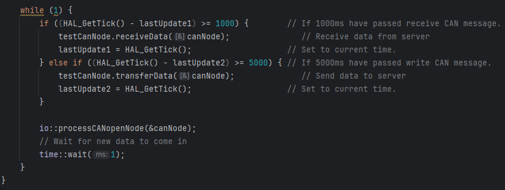
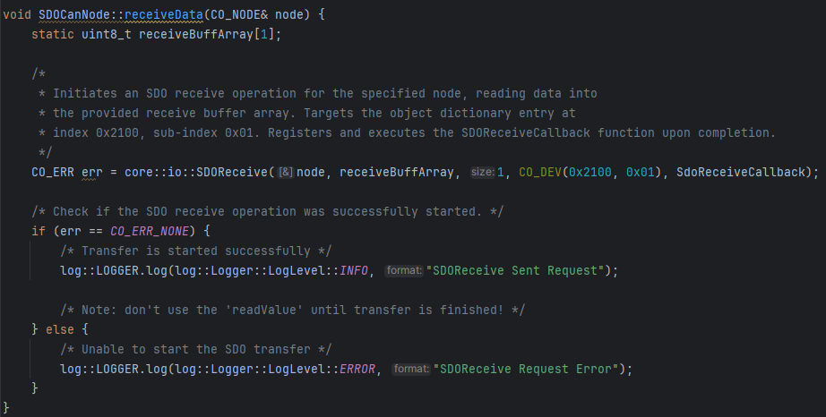
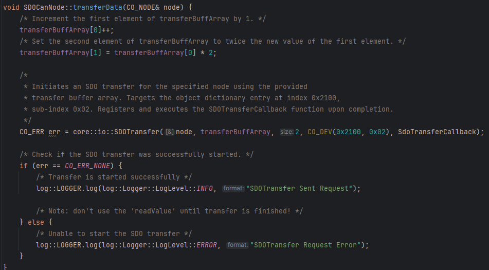

Overview:
This example program uses two STM32 microcontrollers to communicate via the CANopen Service Data Objects
(SDO) protocol, serving as a learning tool for other team members.
Main Loop
The client node receives data from the server every second and sends data back every five
seconds.

receiveData
Retrieves data from the server to the client.
- Instantiates an array to store the received values.
- Uses the SDOReceive method to request and validate the data.
- Logs errors or success messages via a UART Logger.

transferData
Sends data from the client to the server.
- Increments the first array element and doubles its value for the second element.
- Uses the SDOTransfer method to initiate the data transfer and checks for errors.
- Logs errors or success messages via a UART Logger.

SDOReceive
This function initiates an SDO upload (read) request to retrieve data from the specified object
dictionary entry on the target CANopen node.
- Uses the
COCSdoFind method to locate the target CANopen node for communication.
- Registers the callback function to handle the operation's completion or errors.
- Sends the upload request and returns any corresponding error codes or statuses.
SDOTransfer
This function prepares and initiates an SDO download (write) request to send data to the specified
object dictionary entry on the target CANopen node.
- Uses the
COCSdoFind method to locate the target CANopen node for communication.
- Registers the callback function to monitor the operation's completion or errors.
- Sends the download request and handles any errors that occur during the process.
registerCallBack
Assigns a user-defined callback function for SDO operations.
- AppCallback function is a pointer to the callback function to register.
- Parameters:
CO_CSDO* csdo: Pointer to the client SDO object.uint16_t index: Object dictionary index.uint8_t sub: Object dictionary subindex.uint32_t code: Completion status (0 for success).
- AppContext is pointer to the csdo node.